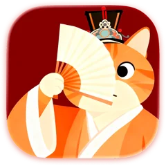
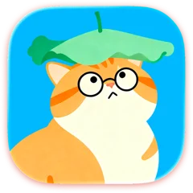
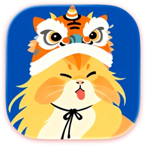
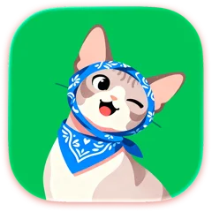
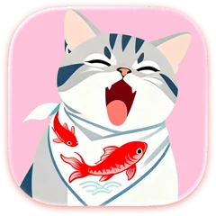
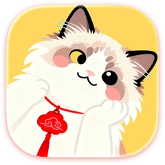
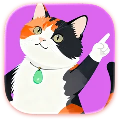

Focus isn't about doing more—it's about protecting what truly matters.
Every Session, a Calm Ritual
Less hustle, more presence—each session is a quiet ritual, not a race against the clock.
Track Time, Stay Focused
A minimalist, Eastern-inspired focus space designed to reduce visual noise—on iPhone and iPad. Living Zen scenes—courtyard, bamboo shadows, lake moon—and calming sounds like purring, temple ambience, and koto music shape each session.







?
Meet Your Companions
Eight cats and Plumeo the crane—each with a story, personality, and accessories of their own. One partner stays with you during every focus session: a calm presence, never a distraction.
🔥+0
❤️+0
Reward Your Good Habits
Complete focus sessions to earn Energy Points. If you end early, your partner gently reacts—encouraging you to try again next time. Points unlock cats, themes, and sounds; Plumeo the crane joins through the Partner store.
Unlock Beautiful Badges
Three badge collections—each tells a story of your focus:
Focus TrainingEvery session of practice adds up.
Daily CompanionshipSteady presence, day after day.
Moments CollectedFocus time gathered over the long haul.
From first steps to long-term growth—badges visualize your path.
Relax with Calming Sounds
Redeem Energy Points in the Points Store for ambient music and Zen scene themes. Pair gentle motion with soundscapes that help you settle into deep focus.
Block External Distractions
Relaxed ModeSwitch apps freely with no penalties.
Challenged ModeApp switching reduces Energy Points earned, keeping you aware of distractions.
Whitelist ModeOnly selected apps stay available via Screen Time. (Requires iOS 16 or later and a Plus subscription)
Focus Stats & Timeline
See total focus time and session counts, explore daily/weekly/monthly trends, understand task distribution and peak focus hours, and review sessions with notes and reflections.
Live Activities & Dynamic Island
Dynamic Island and Live Activity keep your timer on the lock screen while you focus—visible at a glance, without opening the app.
9:41
7-day focus trend (duration)
M
T
W
T
F
S
S
Today
2h 15m
4×
This week
Duration8h 40m
Sessions12×
Per day~1h 14m
Calendar
Photos
PurrrrrFocus
Mail
Home Screen Widgets
Pin Today, your week at a glance, or a 7-day trend—without opening the app. Widgets follow your in-app theme and stay useful on the home screen between sessions.
OfflineNo cloud required
No accountStart instantly
No trackingPrivate by design
No adsDistraction-free
Privacy First
PurrrrrFocus works fully offline—no account, no tracking, and no ads. Your focus sessions, notes, and stats never leave your iPhone unless you choose to export them.
Why Louis made PurrrrrFocus—and what people say after a few sessions.
From the creator
“I built this app to survive the notification storm that was drowning my own focus.”
After years in SaaS—100+ group chats, endless pings—I felt deep work slipping away. PurrrrrFocus started as a quiet place to get my attention back. I kept it offline, gentle, and free of noise because that's what I needed on my own phone.
From people who use it
Sticking with it
Cute and practical—helping me make a little progress every day. I'll keep using it long-term.
Companions
Adorable! Love the emotional connection with the cat companions.
Calm scenes
OMG this is adorable! I love the Chinese-inspired themes.
Find your focus style
Not ready to download yet? These pages help you compare apps and pick a starting point.
Is PurrrrrFocus a Pomodoro timer—and can I use it for study and work?
Yes. PurrrrrFocus supports Pomodoro intervals and open-ended focus sessions in a calm, Zen-inspired space—on iPhone and iPad. It works well for studying, deep work, and everyday routines without clutter or pressure.
Is PurrrrrFocus free—and what does Plus include?
PurrrrrFocus is free to download, with no ads. You can use the core Pomodoro and count-up timer, Relaxed focus mode, basic session stats, home screen widgets, Live Activity, and fully offline privacy on your device.
Plus (optional) adds Challenged & Whitelist focus modes, custom task types, advanced statistics, data export, exclusive app icons, energy-point icon styles, and selected Plus-only ambient sounds.
Some companions, themes, and music are unlocked over time through Energy Points or optional in-app purchases—they are not all included on day one. See Support for plans in your region.
Does it work on iPhone and iPad?
Yes. PurrrrrFocus is built for both iPhone and iPad and requires iOS 15.0 or later. Your sessions, stats, and widgets stay on your device.
Is my focus data private and stored offline?
Yes. PurrrrrFocus runs fully offline—no account, no tracking, and no ads. Your focus history stays on your device unless you choose to export it (Plus).
Is it suitable for ADHD?
Many people with ADHD use it for the calm layout, flexible timers, and gentle companion feedback—structure without overwhelm. See our ADHD focus guide for practical tips.
Download PurrrrrFocus
Turn everyday focus into a calmer, more meaningful ritual.